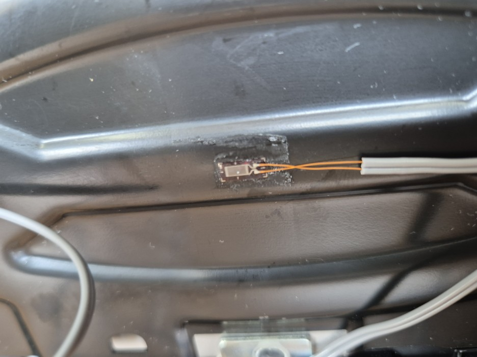
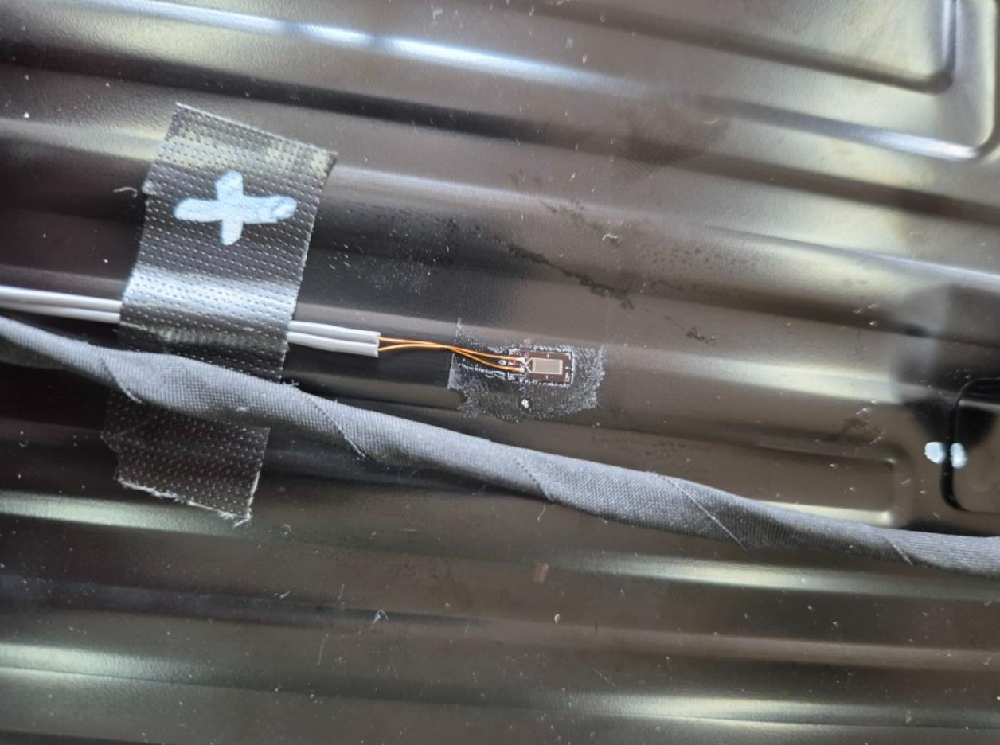
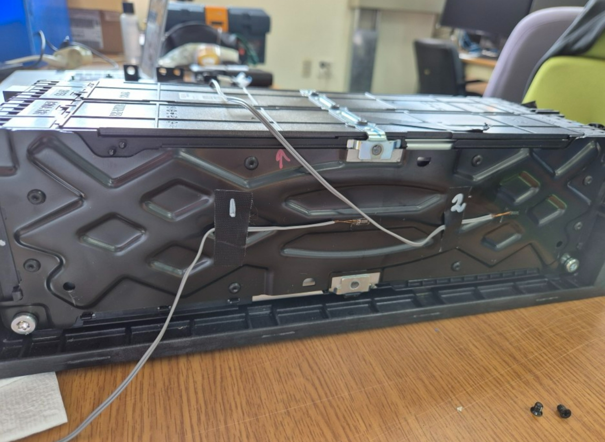
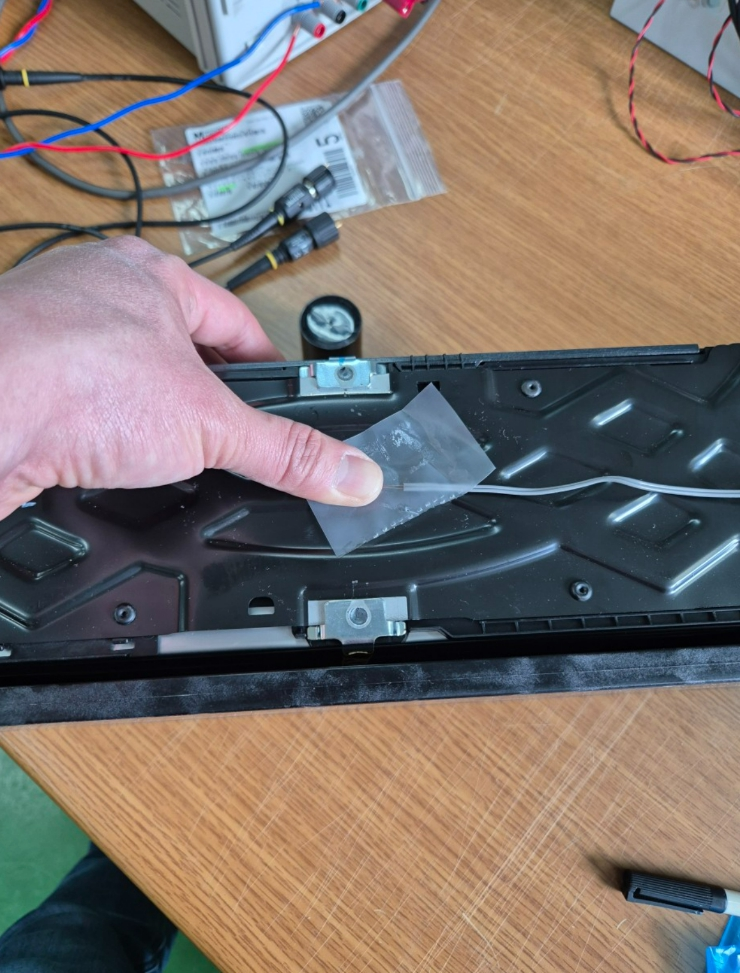

차량용 배터리는 충전 시 셀 내부 전극 소재의 부피 변화로 미세하게 팽창합니다. 씨앤디테크는 배터리 셀·케이스에 스트레인게이지를 부착하고 DAQ 시스템으로 신호를 확인해, 충전 중 발생하는 팽창 변형을 데이터로 정량화하는 현장 계측을 지원했습니다.
리튬이온 배터리 셀은 충·방전 과정에서 전극 소재의 부피 변화로 인해 미세하게 팽창·수축합니다. 이 팽창이 반복되면 배터리 케이스와 셀 고정 구조에 지속적인 응력이 가해져 케이스 변형, 실링부 손상, 내부 셀 압박 등 안전·수명 문제로 이어질 수 있습니다.
씨앤디테크는 배터리 케이스에 스트레인게이지 부착 작업을 진행하여, 차량용 배터리 충전 시 팽창되는 현상을 스트레인게이지를 이용해 정량적으로 측정하는 시험을 지원했습니다. 배터리 셀에 게이지를 부착한 뒤 DAQ 시스템을 통해 신호 확인, 데이터 측정까지 전 과정을 담당했습니다.

배터리 셀 표면은 파우치·캔 재질의 곡면이거나 협소한 내부 공간에 위치하는 경우가 많아, 표준 평면 부착보다 정밀한 위치 선정과 접착 공정, 배선 정리가 요구됩니다.



씨앤디테크의 현장 지원 인원은 모두 20년 이상의 계측 현장 경험을 보유하고 있으며, 독일 현지에서 스트레인게이지 부착 관련 교육을 이수했습니다. 국내에서 스트레인게이지 이론·부착 세미나를 다수 진행한 이력도 있으며, 연간 500포인트 이상의 스트레인게이지 설치 및 시험 지원을 수행하고 있습니다.
관련 기술 자료 더 보기:
차량용 배터리 케이스 스트레인게이지 측정 관련 질문
배터리 셀·케이스 형태, 측정 목적(안전성 검증·설계 최적화 등), 충·방전 조건을 알려주시면 최적 게이지 구성과 DAQ 시스템을 안내해 드립니다. 현장 출장 측정도 가능합니다.